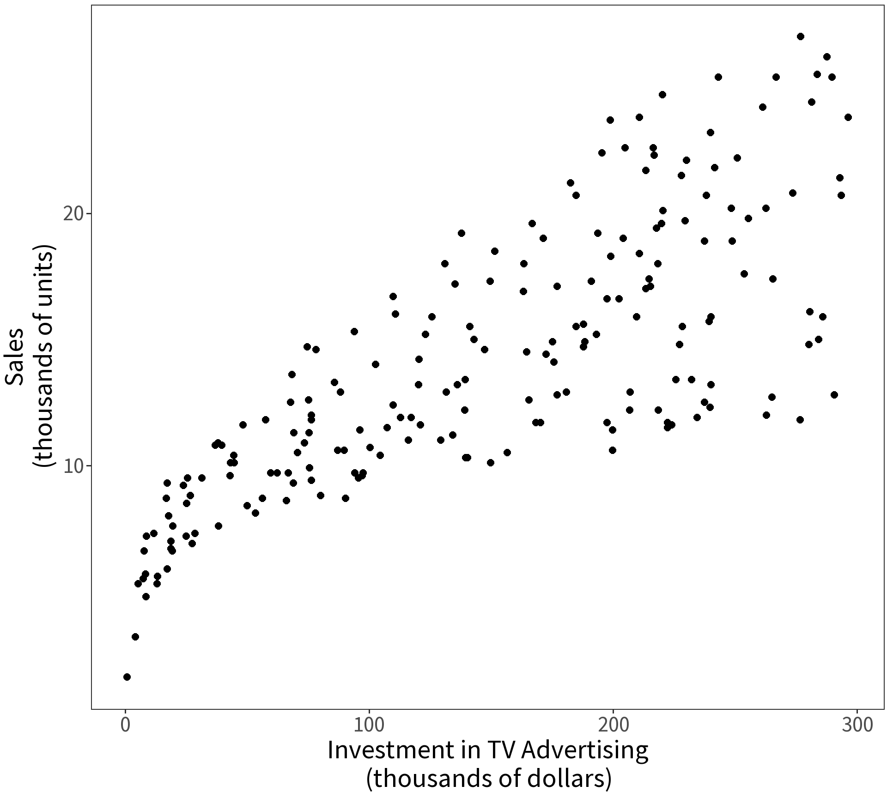
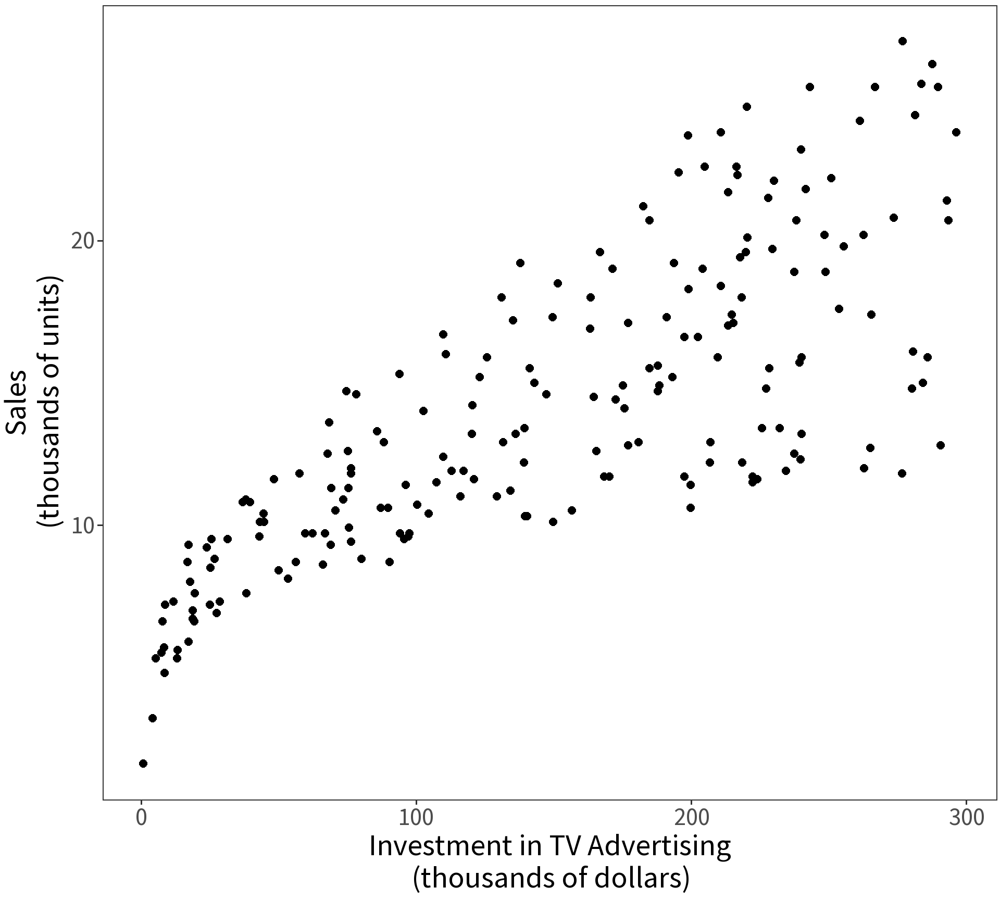
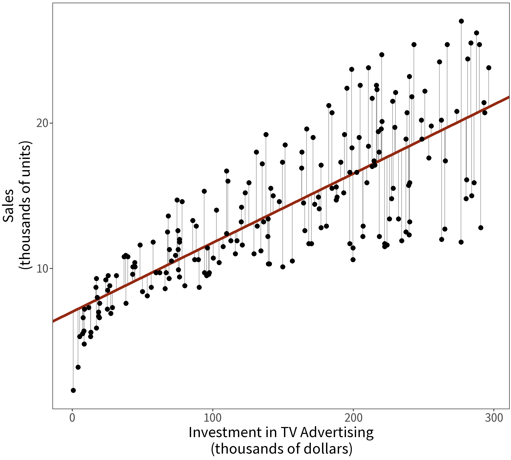
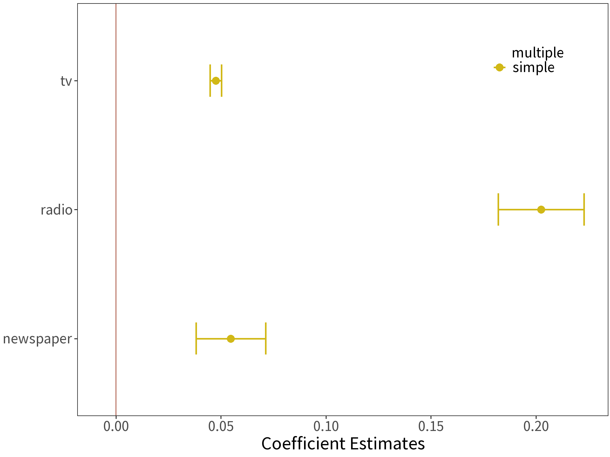
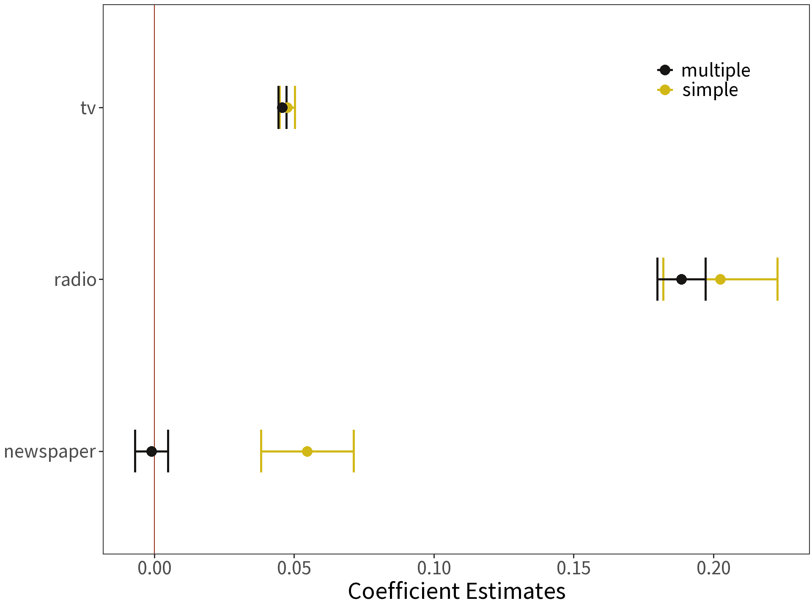
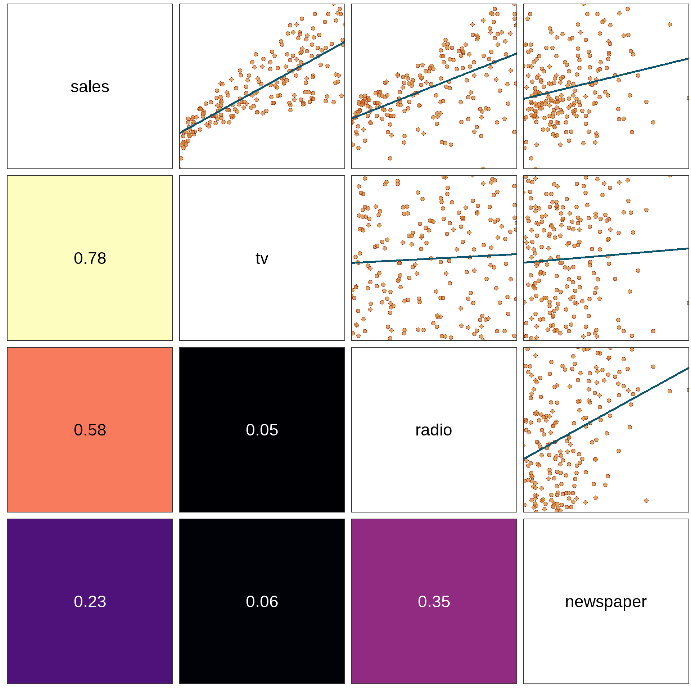
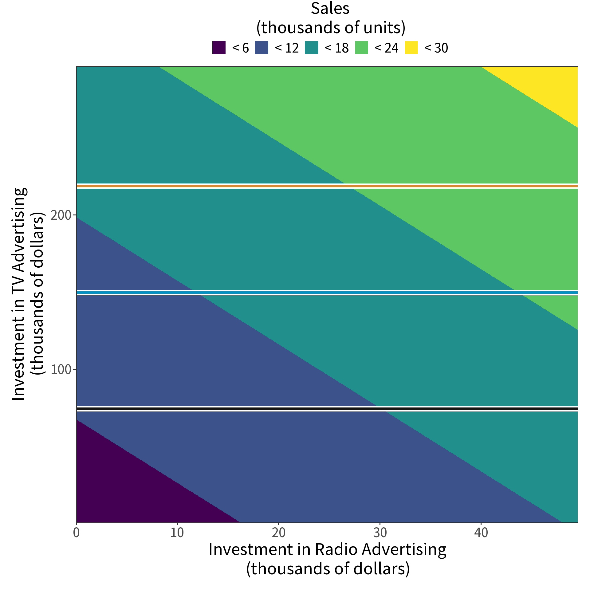
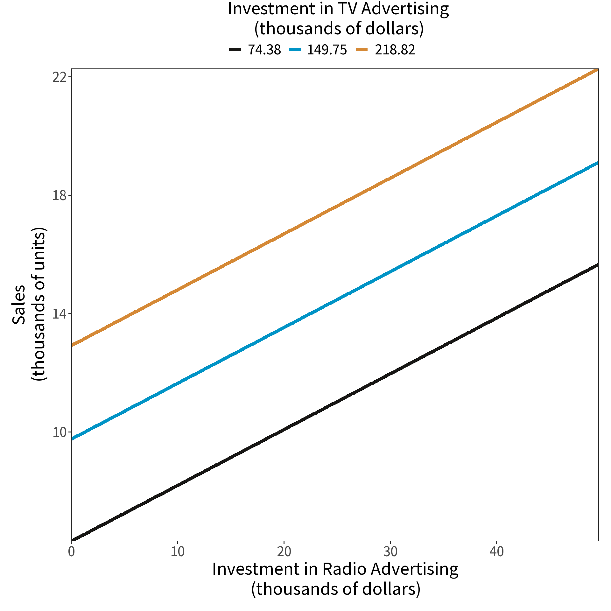

2/28/23

| sales | tv | radio | newspaper |
|---|---|---|---|
| 22.1 | 230.1 | 37.8 | 69.2 |
| 10.4 | 44.5 | 39.3 | 45.1 |
| 9.3 | 17.2 | 45.9 | 69.3 |
| 18.5 | 151.5 | 41.3 | 58.5 |
| 12.9 | 180.8 | 10.8 | 58.4 |
| 7.2 | 8.7 | 48.9 | 75.0 |
| 11.8 | 57.5 | 32.8 | 23.5 |
| 13.2 | 120.2 | 19.6 | 11.6 |
| 4.8 | 8.6 | 2.1 | 1.0 |
| 10.6 | 199.8 | 2.6 | 21.2 |
| 8.6 | 66.1 | 5.8 | 24.2 |
| 17.4 | 214.7 | 24.0 | 4.0 |
| 9.2 | 23.8 | 35.1 | 65.9 |
| 9.7 | 97.5 | 7.6 | 7.2 |
| 19.0 | 204.1 | 32.9 | 46.0 |
| 22.4 | 195.4 | 47.7 | 52.9 |
| 12.5 | 67.8 | 36.6 | 114.0 |
| 24.4 | 281.4 | 39.6 | 55.8 |
| 11.3 | 69.2 | 20.5 | 18.3 |
| 14.6 | 147.3 | 23.9 | 19.1 |
| 18.0 | 218.4 | 27.7 | 53.4 |
| 12.5 | 237.4 | 5.1 | 23.5 |
| 5.6 | 13.2 | 15.9 | 49.6 |
| 15.5 | 228.3 | 16.9 | 26.2 |
| 9.7 | 62.3 | 12.6 | 18.3 |
| 12.0 | 262.9 | 3.5 | 19.5 |
| 15.0 | 142.9 | 29.3 | 12.6 |
| 15.9 | 240.1 | 16.7 | 22.9 |
| 18.9 | 248.8 | 27.1 | 22.9 |
| 10.5 | 70.6 | 16.0 | 40.8 |
| 21.4 | 292.9 | 28.3 | 43.2 |
| 11.9 | 112.9 | 17.4 | 38.6 |
| 9.6 | 97.2 | 1.5 | 30.0 |
| 17.4 | 265.6 | 20.0 | 0.3 |
| 9.5 | 95.7 | 1.4 | 7.4 |
| 12.8 | 290.7 | 4.1 | 8.5 |
| 25.4 | 266.9 | 43.8 | 5.0 |
| 14.7 | 74.7 | 49.4 | 45.7 |
| 10.1 | 43.1 | 26.7 | 35.1 |
| 21.5 | 228.0 | 37.7 | 32.0 |
| 16.6 | 202.5 | 22.3 | 31.6 |
| 17.1 | 177.0 | 33.4 | 38.7 |
| 20.7 | 293.6 | 27.7 | 1.8 |
| 12.9 | 206.9 | 8.4 | 26.4 |
| 8.5 | 25.1 | 25.7 | 43.3 |
| 14.9 | 175.1 | 22.5 | 31.5 |
| 10.6 | 89.7 | 9.9 | 35.7 |
| 23.2 | 239.9 | 41.5 | 18.5 |
| 14.8 | 227.2 | 15.8 | 49.9 |
| 9.7 | 66.9 | 11.7 | 36.8 |
| 11.4 | 199.8 | 3.1 | 34.6 |
| 10.7 | 100.4 | 9.6 | 3.6 |
| 22.6 | 216.4 | 41.7 | 39.6 |
| 21.2 | 182.6 | 46.2 | 58.7 |
| 20.2 | 262.7 | 28.8 | 15.9 |
| 23.7 | 198.9 | 49.4 | 60.0 |
| 5.5 | 7.3 | 28.1 | 41.4 |
| 13.2 | 136.2 | 19.2 | 16.6 |
| 23.8 | 210.8 | 49.6 | 37.7 |
| 18.4 | 210.7 | 29.5 | 9.3 |
| 8.1 | 53.5 | 2.0 | 21.4 |
| 24.2 | 261.3 | 42.7 | 54.7 |
| 15.7 | 239.3 | 15.5 | 27.3 |
| 14.0 | 102.7 | 29.6 | 8.4 |
| 18.0 | 131.1 | 42.8 | 28.9 |
| 9.3 | 69.0 | 9.3 | 0.9 |
| 9.5 | 31.5 | 24.6 | 2.2 |
| 13.4 | 139.3 | 14.5 | 10.2 |
| 18.9 | 237.4 | 27.5 | 11.0 |
| 22.3 | 216.8 | 43.9 | 27.2 |
| 18.3 | 199.1 | 30.6 | 38.7 |
| 12.4 | 109.8 | 14.3 | 31.7 |
| 8.8 | 26.8 | 33.0 | 19.3 |
| 11.0 | 129.4 | 5.7 | 31.3 |
| 17.0 | 213.4 | 24.6 | 13.1 |
| 8.7 | 16.9 | 43.7 | 89.4 |
| 6.9 | 27.5 | 1.6 | 20.7 |
| 14.2 | 120.5 | 28.5 | 14.2 |
| 5.3 | 5.4 | 29.9 | 9.4 |
| 11.0 | 116.0 | 7.7 | 23.1 |
| 11.8 | 76.4 | 26.7 | 22.3 |
| 12.3 | 239.8 | 4.1 | 36.9 |
| 11.3 | 75.3 | 20.3 | 32.5 |
| 13.6 | 68.4 | 44.5 | 35.6 |
| 21.7 | 213.5 | 43.0 | 33.8 |
| 15.2 | 193.2 | 18.4 | 65.7 |
| 12.0 | 76.3 | 27.5 | 16.0 |
| 16.0 | 110.7 | 40.6 | 63.2 |
| 12.9 | 88.3 | 25.5 | 73.4 |
| 16.7 | 109.8 | 47.8 | 51.4 |
| 11.2 | 134.3 | 4.9 | 9.3 |
| 7.3 | 28.6 | 1.5 | 33.0 |
| 19.4 | 217.7 | 33.5 | 59.0 |
| 22.2 | 250.9 | 36.5 | 72.3 |
| 11.5 | 107.4 | 14.0 | 10.9 |
| 16.9 | 163.3 | 31.6 | 52.9 |
| 11.7 | 197.6 | 3.5 | 5.9 |
| 15.5 | 184.9 | 21.0 | 22.0 |
| 25.4 | 289.7 | 42.3 | 51.2 |
| 17.2 | 135.2 | 41.7 | 45.9 |
| 11.7 | 222.4 | 4.3 | 49.8 |
| 23.8 | 296.4 | 36.3 | 100.9 |
| 14.8 | 280.2 | 10.1 | 21.4 |
| 14.7 | 187.9 | 17.2 | 17.9 |
| 20.7 | 238.2 | 34.3 | 5.3 |
| 19.2 | 137.9 | 46.4 | 59.0 |
| 7.2 | 25.0 | 11.0 | 29.7 |
| 8.7 | 90.4 | 0.3 | 23.2 |
| 5.3 | 13.1 | 0.4 | 25.6 |
| 19.8 | 255.4 | 26.9 | 5.5 |
| 13.4 | 225.8 | 8.2 | 56.5 |
| 21.8 | 241.7 | 38.0 | 23.2 |
| 14.1 | 175.7 | 15.4 | 2.4 |
| 15.9 | 209.6 | 20.6 | 10.7 |
| 14.6 | 78.2 | 46.8 | 34.5 |
| 12.6 | 75.1 | 35.0 | 52.7 |
| 12.2 | 139.2 | 14.3 | 25.6 |
| 9.4 | 76.4 | 0.8 | 14.8 |
| 15.9 | 125.7 | 36.9 | 79.2 |
| 6.6 | 19.4 | 16.0 | 22.3 |
| 15.5 | 141.3 | 26.8 | 46.2 |
| 7.0 | 18.8 | 21.7 | 50.4 |
| 11.6 | 224.0 | 2.4 | 15.6 |
| 15.2 | 123.1 | 34.6 | 12.4 |
| 19.7 | 229.5 | 32.3 | 74.2 |
| 10.6 | 87.2 | 11.8 | 25.9 |
| 6.6 | 7.8 | 38.9 | 50.6 |
| 8.8 | 80.2 | 0.0 | 9.2 |
| 24.7 | 220.3 | 49.0 | 3.2 |
| 9.7 | 59.6 | 12.0 | 43.1 |
| 1.6 | 0.7 | 39.6 | 8.7 |
| 12.7 | 265.2 | 2.9 | 43.0 |
| 5.7 | 8.4 | 27.2 | 2.1 |
| 19.6 | 219.8 | 33.5 | 45.1 |
| 10.8 | 36.9 | 38.6 | 65.6 |
| 11.6 | 48.3 | 47.0 | 8.5 |
| 9.5 | 25.6 | 39.0 | 9.3 |
| 20.8 | 273.7 | 28.9 | 59.7 |
| 9.6 | 43.0 | 25.9 | 20.5 |
| 20.7 | 184.9 | 43.9 | 1.7 |
| 10.9 | 73.4 | 17.0 | 12.9 |
| 19.2 | 193.7 | 35.4 | 75.6 |
| 20.1 | 220.5 | 33.2 | 37.9 |
| 10.4 | 104.6 | 5.7 | 34.4 |
| 11.4 | 96.2 | 14.8 | 38.9 |
| 10.3 | 140.3 | 1.9 | 9.0 |
| 13.2 | 240.1 | 7.3 | 8.7 |
| 25.4 | 243.2 | 49.0 | 44.3 |
| 10.9 | 38.0 | 40.3 | 11.9 |
| 10.1 | 44.7 | 25.8 | 20.6 |
| 16.1 | 280.7 | 13.9 | 37.0 |
| 11.6 | 121.0 | 8.4 | 48.7 |
| 16.6 | 197.6 | 23.3 | 14.2 |
| 19.0 | 171.3 | 39.7 | 37.7 |
| 15.6 | 187.8 | 21.1 | 9.5 |
| 3.2 | 4.1 | 11.6 | 5.7 |
| 15.3 | 93.9 | 43.5 | 50.5 |
| 10.1 | 149.8 | 1.3 | 24.3 |
| 7.3 | 11.7 | 36.9 | 45.2 |
| 12.9 | 131.7 | 18.4 | 34.6 |
| 14.4 | 172.5 | 18.1 | 30.7 |
| 13.3 | 85.7 | 35.8 | 49.3 |
| 14.9 | 188.4 | 18.1 | 25.6 |
| 18.0 | 163.5 | 36.8 | 7.4 |
| 11.9 | 117.2 | 14.7 | 5.4 |
| 11.9 | 234.5 | 3.4 | 84.8 |
| 8.0 | 17.9 | 37.6 | 21.6 |
| 12.2 | 206.8 | 5.2 | 19.4 |
| 17.1 | 215.4 | 23.6 | 57.6 |
| 15.0 | 284.3 | 10.6 | 6.4 |
| 8.4 | 50.0 | 11.6 | 18.4 |
| 14.5 | 164.5 | 20.9 | 47.4 |
| 7.6 | 19.6 | 20.1 | 17.0 |
| 11.7 | 168.4 | 7.1 | 12.8 |
| 11.5 | 222.4 | 3.4 | 13.1 |
| 27.0 | 276.9 | 48.9 | 41.8 |
| 20.2 | 248.4 | 30.2 | 20.3 |
| 11.7 | 170.2 | 7.8 | 35.2 |
| 11.8 | 276.7 | 2.3 | 23.7 |
| 12.6 | 165.6 | 10.0 | 17.6 |
| 10.5 | 156.6 | 2.6 | 8.3 |
| 12.2 | 218.5 | 5.4 | 27.4 |
| 8.7 | 56.2 | 5.7 | 29.7 |
| 26.2 | 287.6 | 43.0 | 71.8 |
| 17.6 | 253.8 | 21.3 | 30.0 |
| 22.6 | 205.0 | 45.1 | 19.6 |
| 10.3 | 139.5 | 2.1 | 26.6 |
| 17.3 | 191.1 | 28.7 | 18.2 |
| 15.9 | 286.0 | 13.9 | 3.7 |
| 6.7 | 18.7 | 12.1 | 23.4 |
| 10.8 | 39.5 | 41.1 | 5.8 |
| 9.9 | 75.5 | 10.8 | 6.0 |
| 5.9 | 17.2 | 4.1 | 31.6 |
| 19.6 | 166.8 | 42.0 | 3.6 |
| 17.3 | 149.7 | 35.6 | 6.0 |
| 7.6 | 38.2 | 3.7 | 13.8 |
| 9.7 | 94.2 | 4.9 | 8.1 |
| 12.8 | 177.0 | 9.3 | 6.4 |
| 25.5 | 283.6 | 42.0 | 66.2 |
| 13.4 | 232.1 | 8.6 | 8.7 |

| term | estimate | std.error | t.statistic | p.value |
|---|---|---|---|---|
| (Intercept) | 7.033 | 0.458 | 15.36 | 0 |
| tv | 0.048 | 0.003 | 17.67 | 0 |
Note the units! We interpret the slope coefficient here as saying, “For every $1000 spent on television advertising, sales increased by approximately 50 units.”
Question What does the intercept mean?
Question What about the money invested in radio and newspaper advertising?
To answer this, we could try building three separate models:
But, this assumes that the coefficient estimates are independent of each other…
Solution Make one big model!

Coefficients are estimated in the same way, but the interpretation changes! Consider
\[\beta_{radio}=0.189\]
Read: “For some amount of tv and newspaper advertising, spending an additional $1000 on radio advertising increases sales by approximately 189 units.”

The estimate for newspaper is no longer significantly different than zero!
Question Why might this be?

Answer: newspaper and radio advertising are correlated (\(\rho\) = 0.35).
So, newspaper advertising was never really increasing sales. It was just taking “credit” for radio’s contribution.
Problem It is possible for multiple variables to correlate even if no single pair does.
Solution Measure the Variance Inflation Factor for each covariate.
\[VIF(\hat{B_j}) = \frac{1}{1-R^{2}_{j}}\]
where \(R^{2}_{j}\) is the coefficient of determination for the model \(x_j \sim x_1 + x_2 + \ldots + x_i\).
Variance Inflation inflates the standard errors, too!
\[se(\hat{B_j}) = \sqrt{Var(\hat{B_j}) \cdot VIF(\hat{B_j})}\]
| covariate | VIF |
|---|---|
| tv | 1.005 |
| radio | 1.145 |
| newspaper | 1.145 |
VIF close to 1 means no multicollinearity.
Rule of Thumb VIF that exceeds 5 is too much! Or is it 10? 🤔
Strategies for handling multicollinearity include:
We have two nested models of our data:
Question: Does the complex model (C) explain more variance than the simple model (S)? Does the difference arise by chance?
Here are our hypotheses:
| m | term | df.residual | RSS | df | sumsq | F | Pr(>F) |
|---|---|---|---|---|---|---|---|
| S | sales ~ tv | 198 | 2102.5 | ||||
| C | sales ~ tv + radio + newspaper | 196 | 556.8 | 2 | 1546 | 272 | < 2.2e-16 |
\[F = \frac{(RSS_{S} - RSS_{C})/(df_S - df_C)}{RSS_{C}/df_C}\]

